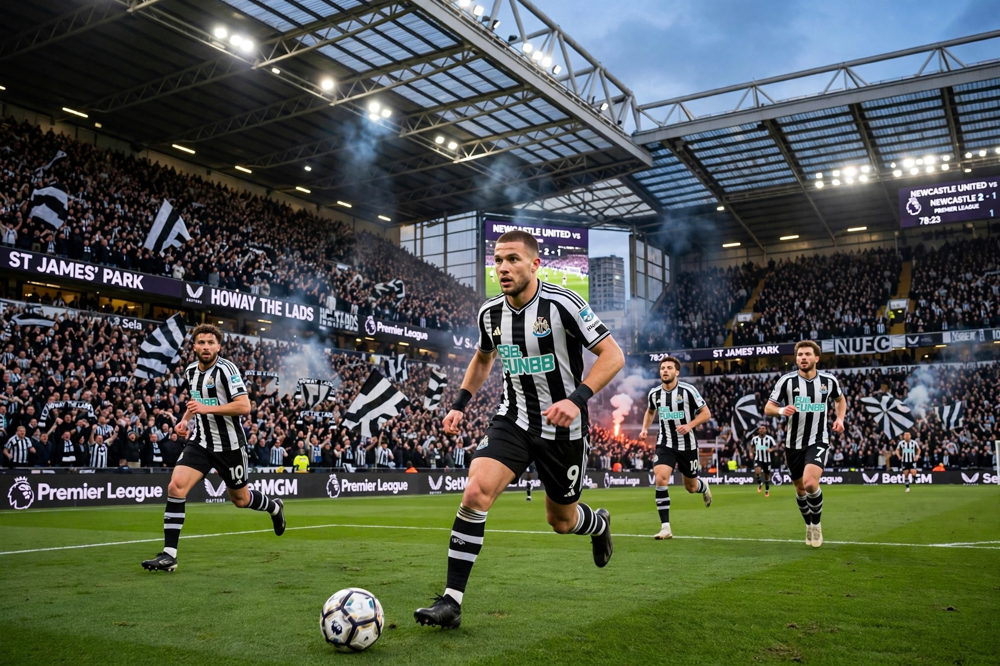

Newcastle United Football Club is a professional football club based in Newcastle upon Tyne, England. Formed in 1892 by the merger of Newcastle East End and Newcastle West End, the club plays in black-and-white striped shirts at St James' Park and competes in the Premier League.
Newcastle won four League titles and three FA Cups in the Edwardian era, and further FA Cups in 1951, 1952 and 1955, plus the Inter-Cities Fairs Cup in 1969. Under Kevin Keegan in the 1990s, the "Entertainers" finished Premier League runners-up twice, with record signing Alan Shearer — the club and Premier League's all-time top scorer — leading the attack. Bobby Robson later took them into the Champions League.
After the Mike Ashley era and relegations in 2009 and 2016, a consortium led by Saudi Arabia's Public Investment Fund bought the club in October 2021. Under Eddie Howe, Newcastle qualified for the Champions League in 2023 and won the 2025 EFL Cup, beating Liverpool in the final — their first major domestic trophy since 1955.
The main rivalry is with Sunderland in the Tyne–Wear derby.